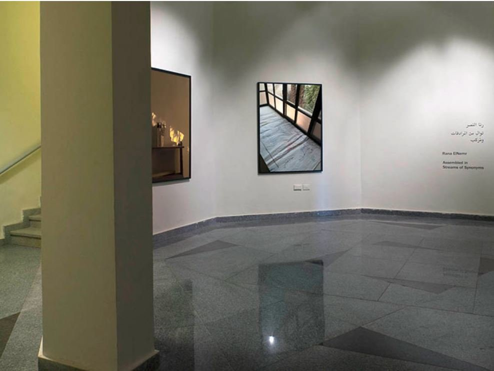
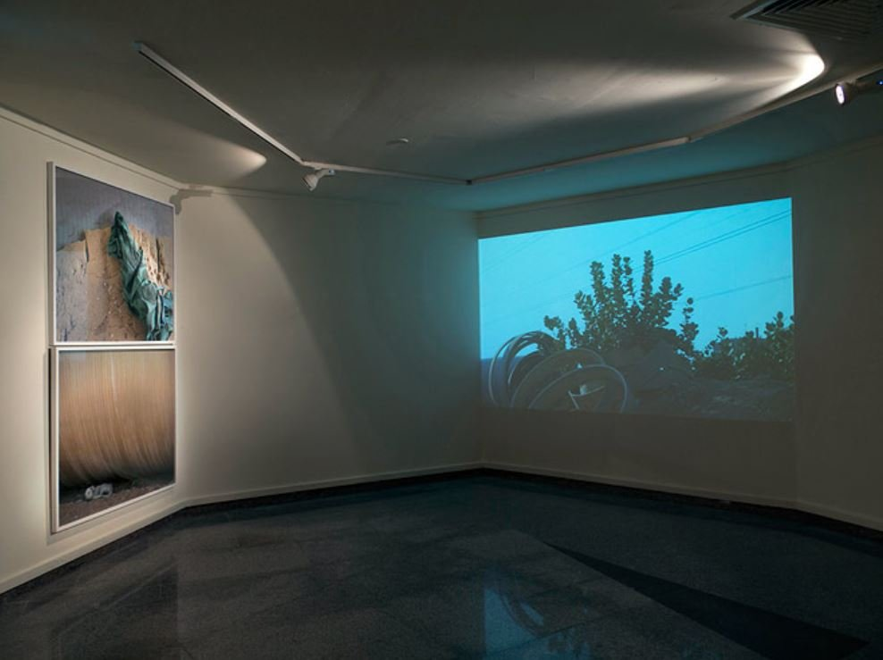

Originally published in Nafas Art Magazine February 2015
By Ismail Fayed
"With cities, it is as with dreams: everything imaginable can be dreamed.. Cities, like dreams, are made of desires and fears, even if the thread of their discourse is secret, their rules are absurd, their perspectives deceitful, and everything conceals something else." Perhaps it is Calvino's description of the city that closely echoes the practice of Rana ElNemr. From her photographic series of extravagant and often kitschy resort gates' by the Mediterranean Coast in Coastline (2005), to her installation/collage of the fronts of residential balconies all over Cairo Telekinesis (2007), to her visual escapades as she drives along the city in Giza Threads (2011), ElNemr is set out to explore the many ways we relate, understand and 'see' the city. In doing so she doesn't only reveal the many possibilities of seeing the city and creating all possible of scenarios to visually perceive it, but she also raises profound questions on the very practice of photography itself. ElNemr's practice hinges on the dual process of expanding our visual and conceptual understanding of space (immediate space, such as personal residence or studio space to more abstract notions of space, such as the city or even imaginary space), as well as, the materiality and meaning of the image.

Entrance to the gallery, artworks on display: Map (2014) and The Dictionary of Imaginary Places (2014). © Photo: Rana ElNemr
In her latest exhibition, Assembled in Streams of Synonyms (2014), curated by Maha Maamoun and part of AUC_LAB a series of exhibitions and publications commissioned by the Sharjah Art Gallery of the American University in Cairo (directed by Kaya Behkalam) ElNemr takes her exploration of spaces, in the multitude forms and meanings of spaces to new materialities and formats that reflect her artistic interests and preoccupations. She uses prints on archival paper, vinyl, 16mm film, 8mm film, animation, audio and an object installation to share with the audience the different ways in which she negotiates meaning through her personal experience of space, coupled with experimentations with different mediums that visually translate her ideas in ever changing and distinctive ways. With each medium she investigates the layers of meaning that the medium carries, and the connections and overlaps between such meanings and her own artistic and subjective experience.
The Sharjah Art Gallery at AUC is a two storey space, with a peculiar hexagonal front and a semi-square that ends at one angle with a slanted passage. The exhibition consists of 11 elements or sequences, 5 on the ground floor (Map, The Dictionary of Imaginary Places, It became know that King Mariout now has a library, The Living Object, The Shaft) and 6 on the first floor (Depot, Assembled in Streams of Synonyms, Extent, Department of Squares and Roundabouts, The Khan, It became known that King Mariout now has a Library). Together they represent fragments that work in the way of association between image, text and various formats of the moving image. Each sequence can stand by itself reflecting ElNemr's artistic interests and questions at large, but also echoing other connections and links with other sequences and elements, thus serving as building blocks for multiple stories and narratives as experienced uniquely by each audience member.
The 5 sequences on the ground floor range from medium size images (Map, The Dictionary of Imaginary Places) to large image printed on Vinyl (It became known that King Mariot now has a Library) to 24 sec 16mm film (The Shaft) to a large lamp post (The Living Object). The first two images one encounters at the entrance, show a hand-drawn simple map, of what seems like a garden (a recurring theme throughout the whole exhibition) next to an image of the book The Dictionary of Imaginary Places on a shelf, suggesting a shelf in a library or at someone's home. Both images set the tone for the exhibition as an exercise of imagining and re-imaging space. The following three sequences on the same floor, show large, glossy image (printed on Vinyl) of a building shot from a 'garden', with dense trees and shrubs interrupting the scene. Opposite to it on the other wall is 16mm film of the shadows of small birds flying, against a grey back drop. Their continuous flight (the film is on a loop, with no clear end or beginning), really brings to mind the 'flight of fancy'. At the very corner, we see a lamp post, with two large lanterns one of which actually houses little seedlings, with a little bit of soil creating a visual surprise within this object, and reflecting yet again the ways in which vegetation infects and cohabits spaces in Cairo, in ways not immediately perceptible.

Depot (2014), inkjet on archival paper, video 30''. Exploring the cohabitation of nature and urban spaces. © Photo: Rana ElNemr
This cohabitation between nature and the most urban of spaces or the periphery of the city is echoed in the six other sequences one the first floor, once in relation to large pipes in what looks like the periphery of the city (Depot). And in little hedges abutted by walls (Assembled in Streams of Synonyms). And again in between high-rise, unfinished residential buildings, with multiple perspectives showing a secret patch of green (Extent). Even the mysterious shelf and the library reappear as a series of small frames of photos of the street leading to, and the entrance of a library (Assembled in Streams of Synonyms) and in the recorded conversation with an anonymous character who speaks about his passion for nature and libraries (It became known that King Mariout now has a Library).
The play on imaginary spaces was reiterated in large photographs of a fair ground (Assembled), and what looks like an abandoned themed park (The Khan). In between the different sized images, ElNemr introduced textual elements that displayed meditations on how we come to understand space, fiction and the city. Adding yet another layer to the process that was complexified further by the use of various formats (8mm, video, animation…etc) of the moving image, that together with still nature of photography added a depth and intensity that transforms all those elements into a magical space to wonder.
"Assembled in Streams of Synonyms" was exhibited at the Sharjah Art Gallery, American University in Cairo, in 2014.